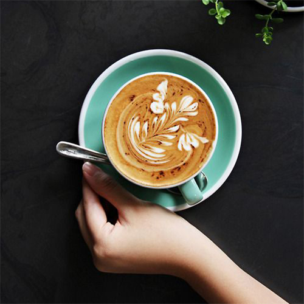
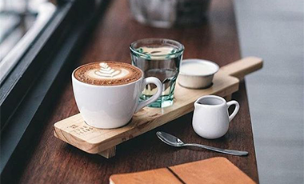
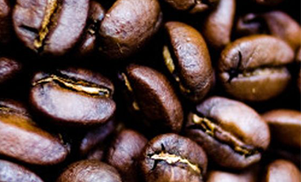
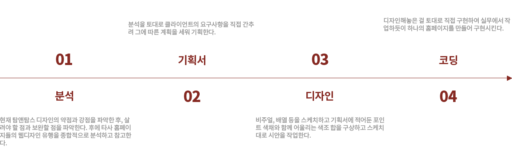
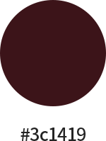
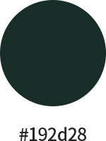
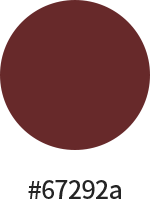
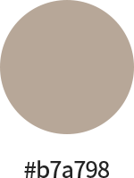
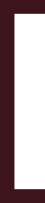
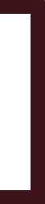

TOM N TOMS
WITH MOBLIE PROJECT
CSS / HTML : 100% DESIGN : 100%
TOM N TOMS
WEB RENEWAL
로고의 포인트 컬러를 사용함과 본 사이트의 최대 장점인 깔끔함을 부각시켜
더 실용성 있도록 리뉴얼
MISSION
-

주메뉴&서브메뉴
일반 방문자들이 알아보기 힘든 카테고리들과 여기저기 난잡하고 지저분한 카테고리들을 하나로 모아, 더욱 쉽게 방문자들이 찾을 수 있도록 바꿔야 함.
-

포인트 컬러 사용
칙칙한 블랙계열을 사용하여 포인트 색채는 전혀 없는 디자인이 심플하긴 했지만. 포인트가 없어 심심한 디자인에 포인트 색채를 사용해서 단순하지만 심심하지만은 않은 디자인이 필요함.
-

메인비쥬얼
위아래가 좁은 형태의 비주얼을 좀 더 넓게 잡아주어 시원한 느낌과 깔끔한 디자인이 필요함.
PROCESS
DESIGN GUIDE






‘Noto Sans KR’ 사용하여 심플하고 간결한 디자인에 어울리도록 해주었고,
어느 구획에서도 깔끔하고 어색하지 않게 들어갈 수 있는 가장 기본적인 폰트를
사용하였다.
SUB PAGE
기존에 만들었던 메인 페이지와 연관성 있도록 포인트 색채 중에서도 메인 색을 지정하여 깔끔하고 심플하게 만들어주었고,
또한, 페이지 방문자들이 알아보기 쉽게 만들어 불편함 없이 사용할 수 있도록 하는 것이 목표였던 페이지.